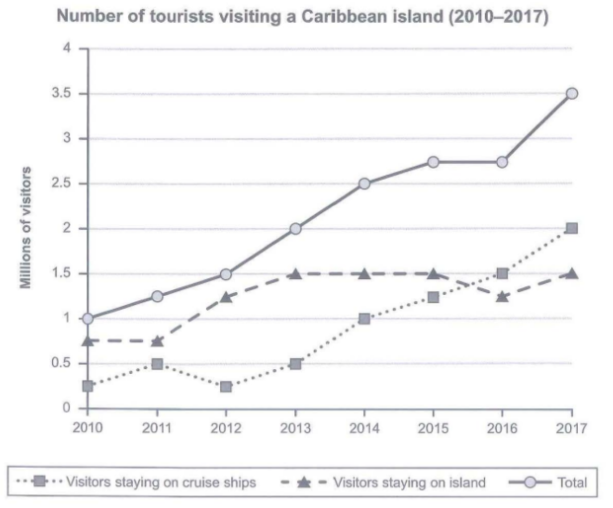

Task 1 — Caribbean island tourists 2010-2017
The graph below shows the number of tourists visiting a particular Caribbean island between 2010 and 2017. Summarise the information by selecting and reporting the main features, and make comparisons where relevant.

The graph shows how many tourists visited a particular Caribbean island between 2010 and 2017, with the total divided into visitors who stayed on the island and visitors who arrived on cruise ships.
Overall, the total number of tourists rose steadily over the period, from 1 million in 2010 to 3.5 million in 2017. Cruise-ship visitors grew much faster than island-based visitors and overtook them before the end of the period.
In 2010, only 0.25 million tourists came by cruise ship, while 0.75 million stayed on the island. Cruise-ship numbers then rose almost continuously, apart from a temporary fall to 0.25 million in 2012, reaching 2 million by 2017. As a result, the overall total climbed steadily, passing 2.5 million in 2014.
By contrast, island-based visitors increased from 0.75 million in 2010 to 1.5 million by 2013, and then stayed at around that level until 2015. In 2016, the figure dipped to 1.25 million, which allowed cruise-ship visitors to overtake them, and in 2017 both figures rose, to 1.5 and 2 million respectively.
TA / TR：完整覆盖两条趋势线 + 总计（2010 年邮轮 0.25 / 岛上 0.75 / 总计 1.0 → 2017 年邮轮 2.0 / 岛上 1.5 / 总计 3.5），概述点出总人数稳步上升与邮轮游客反超两大主特征；主体段 1 报告邮轮线主趋势（2012 年回落至 0.25 的波动保留），主体段 2 报告岛上游客 2013 年见顶 1.5、2015 年后停滞、2016 年跌至 1.25 的异常；全部数字来自图表读数，无杜撰。
CC / LR / GRA：四段式（Introduction → Overview → 主体 1 主趋势 → 主体 2 异常），衔接词 Overall / As a result / By contrast 组织对比；LR 使用 rose steadily / dipped to / overtook / plateaued 等动态图词汇，数字以 million 精确给出；GRA 简单句与复合句交替，which 从句与 respectively 收尾，长句约 25 词。
cruise ship visitors— 邮轮游客island-based visitors— 岛上住宿游客overall total— 总人数rose steadily— 稳步上升overtook— 反超dipped to— 下降至reached a peak— 达到峰值plateaued— 趋于平稳temporary fall— 暂时回落respectively— 分别